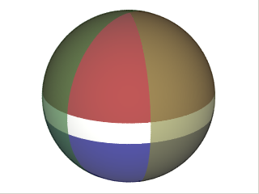

This is a simple box consisting of ra/dec (or lat/lon) limits. lines of equal declination (latitude) are (generally) small circles parallel to the equator. The equal lines of right ascension (longitude) are meridiens, which are great circles. The four halfspaces defined by these circles are oriented so that they "trap" the rectangular region of interest. This is nothing more than the intersection of four halfspaces, therefore it can be represented as a single convex.
The white band is created by the intersection of the two halfspaces each of which is bigger than a hemisphere. Those are the ones withD < 0 (red and blue). The other two hemispheres' intersection
creates the lune. The intersection of the band and the lune yield the white rectangle.
|  |
| Figure 3. 4 halfspaces that define a rectangle |
using Spherical;
/* .... */
namespace MySpace {
public class MyApp {
public void MyFunc(){
Region r = new Region();
Convex c = new Convex();
c.Add(new Halfspace(0.0, 0.0, 1.0, -0.08));
c.Add(new Halfspace(0.0, 0.0, -1.0, -0.15));
c.Add(new Halfspace(0.2, 0.9, 0.0, 0.0));
c.Add(new Halfspace(0.6, 0.7, 0.0, 0.0));
r.Add(c);
/* ... */
}
}
}